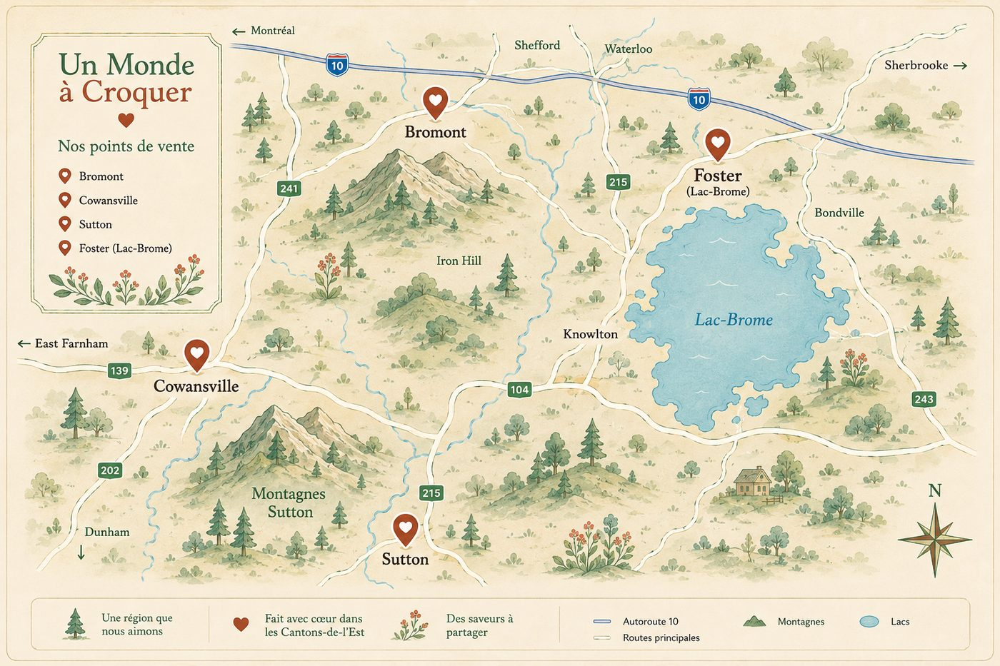

Faits avec amour
Nos biscuits
À partir d'ingrédients simples et de qualité.
En Estrie
Où nous trouver ♥
Retrouvez nos biscuits dans ces commerces locaux partenaires.

Aussi disponibles ♥
Marchés
Retrouvez-nous dans plusieurs marchés locaux tout au long de l'année.
Festivals
Présents dans vos festivals préférés pour vous faire croquer de bonheur.
Événements privés
Ajoutez une touche sucrée à vos événements spéciaux et célébrations.
Vente corporative
Parfaits pour vos cadeaux d'affaires et événements corporatifs.
Vente directe
Commandez directement pour les particuliers et les entreprises.